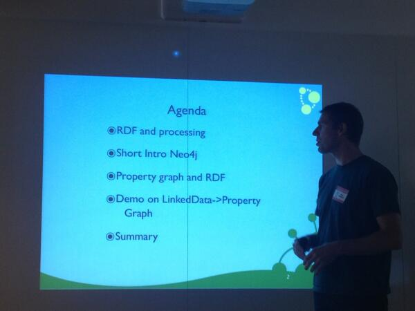
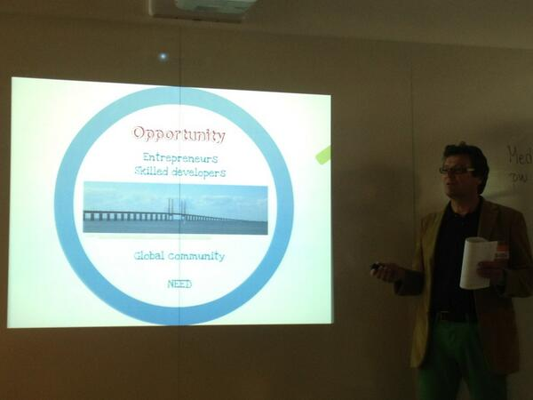

May 2013
Great for my #datascience course > MT @KirkDBorne: Stepping Up To #BigData With R & #Python r-bloggers.com/stepping-up-to… @Rbloggers #Rstats
Single audit time line x-systems w/ W3C PROV w3.org/QA/2013/05/int… > Making Health Data Healthier soc.att.com/1410qs6 @GNayyar cc @ahier
W3C provenance standard will enable @Oracle to create a single audit time line across systems w3.org/QA/2013/05/int…
Submit poster ✅ Book hotel ✅ Flights ✅ for Semantic Trilogy conferences in early July unbsj.ca/sase/csas/data… #icbo2013 #dils2013
How Open is the Linked Open Data cloud? licensius.com/blog/lodlicens… via @gray_alasdair @oeg_upm #LinkedData #eswc2013
Cool > RT @kidehen: #HTML5 #PivotViewer view of @slideshare presentations collection: bit.ly/11adJCm. #eswc2013 #LinkedData
Agree! > MT @hvdsomp: Fantastic that Swedish National Library employs a man like @niklasl co-author of #jsonld w3.org/TR/json-ld/
+10 @pgroth: interviews on @Oracle using @w3c recommendations including #prov for #audittrails
w3.org/QA/2013/05/int… #eswc2013
w3.org/QA/2013/05/int… #eswc2013
My comment on HL7 Watch blog hl7-watch.blogspot.se/2010/12/demogr… linking to the #wikidata talk page for the property sex/gender cc: @jschneider
Productive morning on the bus: 3 @coursera lectures on #nosql and @mhausenblas' short notes data layouts arxiv.org/abs/1305.6506
Warm nice evening sitting in the garden working. But first, catching up on the #eswc2013 feed from 2013.eswc-conferences.org
@jschneider I'll add a comment to this hl7-watch.blogspot.se/2010/12/demogr… and link to the wikidata discussion and also ping the authors
Here we go again; Sex/Gender. This time #wikidata property wikidata.org/wiki/Property_… (via @jschneider) See ceur-ws.org/Vol-833/paper2…
Updated my blog post kerfors.blogspot.se/2013/05/three-… with links to @anjeve's excellent presentations on #LinkedData and #wikidata
MT @egonwillighagen: #SemanticWeb and #LinkedData in the Life Sciences course: nbic.nl/education/nbic… Ping @ituniv @chalmersnyheter
Semantic days conf.: Business Intelligence (BI) and Applied Semantics semanticdays.org Stavanger, Norway #semdays13
This week I'll follow #eswc2013 Extended #SemanticWeb conf. "#BigData and Semantics" 2013.eswc-conferences.org
Currency Conversion the #LinkedData Way: currency2currency.org See also #eswc2013 ws paper salad2013.linkedservices.org/papers/salad20… via @SALAD2013
Travel PR High 5: The best cafés in the world and it includes @damatteocoffee in Gothenburg travelpr.co.uk/2013/05/24/hig… < My favourite
Working in the garden and now catching up with with the #eswc2013 feed from the first day of workshops 2013.eswc-conferences.org/program/worksh…
My presentation on Linked clinical data standards (in Swedish) #LinkedData meeting youtu.be/8Bemp3_m9oo?t=… (video 7.45 - 27.50 min)
Funny, but sad > Data Sharing and Management Snafu in 3 Short Acts: youtu.be/N2zK3sAtr-4 HT @faviki and @mscottmarshall
Nice talk by @peterneubauer on #LinkedData and #Neo4j Checkout neotechnology.com/2012/11/neo-te… at meetup in Malmö

#DBpedia Facated search dbpedia.org/FacetedSearch and Text mining Spotlight github.com/dbpedia-spotli…
At the #LinkedData meetup meetup.com/Linked-Data-in… @bBalsa welcome 30+ attendees to @_FooCafe_ in Malmö

Jason Douglas, from Google: Google Knowledge Graph at #SemTechBiz mbist.ro/10W1QQw See also youtu.be/yp8AjMBG87g
Superintressant ledig tjänst hos @Vinnova om #oppnadata portalen vinnova.se/sv/Om-VINNOVA/… (tips från @rocarls)
Looks so cool HT @mhausenblas > MT @leonardo_noleto: Want to learn #MapReduce programming? jsmapreduce.com Run queries in the browser
+10 > Keynote from NoSQL matters 2013 by @martinfowler vimeo.com/66052102 #nosql #polyglotpersistence < HT @mhausenblas
+1 > "Big Data for All: Privacy and User Control in the Age of Analytics", @omertene @JulesPolonetsky scholarlycommons.law.northwestern.edu/cgi/viewconten…
Semantic Mining of Activity, Social, and Health data Project (SMASH) aimlab.cs.uoregon.edu/SMASH/ via @janicemccallum @praxagora
Semantic Trilogy '13: Posters and Highlights papers deadline extended to May 31 unbsj.ca/sase/csas/data… #icbo2013 #dils2013
I've registered for the Semantic Trilogy conferences in Montreal this summer unbsj.ca/sase/csas/data… Early rate ends tomorrow
“Enterprise Linked Data cloud that marries volume (Big Data) and diversity (semantics)” semanticweb.com/big-data-is-bi… via @ericaxel
“Just give us the <expletive> data, people! (as RDF, preferably)” @mavergames event.knowledgeblog.org/14
MT @cebmblog: How many clinical trials are out there? - I make it 1,202,080 s.shr.lc/163dAsh #ClinicalTrialsDay #AllTrials
lol > MT @rcaputo: #COBOL would be awesome for #MapReduce work. Both technologies work best with data that resembles tapes.
2nd International Workshop on Finance and Economics on the #SemanticWeb (FEOSW 2013) marshut.com/kwxns/2nd-inte…
MT: On International #ClinicalTrialsDay, @iainh_z discusses the current state of #opendata in medicine: bit.ly/17TTm3W
+10 MT @mavergames: On the future of scholarly publ./semantic publ. #linkeddata event.knowledgeblog.org/14
Nice:#MapReduce for and with the kids
webofdata.wordpress.com/2012/11/05/map… by @mhausenblas To help me remember today's lecture #uwdatasci
webofdata.wordpress.com/2012/11/05/map… by @mhausenblas To help me remember today's lecture #uwdatasci
"Propensity using #bigdata predictions to punish people even before they acted" @kncukier's @victor_ms in big-data-book.com
Review of @kncukier's @victor_ms' #bigdata book: What’s Scary About Big Data, and How to Confront It futureofprivacy.org/2013/05/06/wha…
Looking forward to the #LInkedData meetup in Malmö 24th May meetup.com/Linked-Data-in… with @anjeve @mariegus @peterneubauer
Learned a new word today; propsensity, by listening
the Economist’s Data Editor @kncukier thenextweb.com/video/2013/05/… via @KirkDBorne
the Economist’s Data Editor @kncukier thenextweb.com/video/2013/05/… via @KirkDBorne
Nice combo: Intro to MapReduce in Data Science course, class.coursera.org/datasci-001/ Sweden-Finland hockey match on radio, sitting in the garden
Free webinar @lod2project #CubeViz a facetted browser for statistical data utilizing the #RDFDataCube vocabulary www4.gotomeeting.com/register/68721…
CSVImport: Representing multi-dim statistical data as RDF using the #RDF Data Cube Vocab aksw.org/Projects/CSVIm…
#AllTrials? The impending data deluge and why we need technological solutions, great post from @mavergames cochrane.org/news/blog/allt…
Gartner's @darinlstewart: 3-tiered #metadata architecture for #BigContent is.gd/8W1trp < No way if you use #Sharepoint :(
Gartner's @darinlstewart: "3-tiered #metadata architecture for #BigContent" is.gd/8W1trp < Envision the power if all 3 in #RDF
+1 MT @olafhartig: The slide sets from my #www2013 tutorial on "Linked Data Query Processing" is.gd/uJgXUn #LinkedData
Q: Diff b/w info model & ontology in data integration? A: Ontology a real time object not compiled, but interpreted" wp.sigmod.org/?p=871
Quick catch-up before having lunch: 2(2) #shakespearereview of UK Gov Data strategy gov.uk/data-strategy-… #opendata
Quick catch-up before having lunch: 1(2) Parlmnt Sci Tech Committee hearing on clinical trials bit.ly/10p8b9N #AllTrials
+1 MT @fantasticlife: News Storyline Ontology bbc.co.uk/ontologies/sto… via @danbri < Reminds me of my old Newsmaking PhLic thesis project
@TrishWhetzel Hi Trish, no I tried to watch the recorded webex:s but the sound quality was not good.
Financial Report Ontology financialreportontology.wikispaces.com mentioned at the Basic Formal #Ontology (BFO) 2.0 meeting
Cool - @Securboration a company "creating innovative software solutions using semantic modeling" securboration.com/projects/
Looks really interesting > MT @RubenVerborgh: r&wbase (read: “rawbase”) git-style Read/Write #LinkedData rawbase.github.io #LDOW2013
Using #python for my Data Science course coursera.org/course/datasci reminded me of #rexx from the 80:ies blog.smartbear.com/software-quali…
Nice, @billghowe briefly introduces #RDF in the Intro to Data Science course coursera.org/course/datasci
Dear #lazyweb -Have any country assigned URIs for vehicles? I want to propose this for transportstyrelsen.se/en/road/Vehicl… #LinkedData
MT @feber: Nya regplåtar från och med nästa år feber.se/bil/art/271840… < När får vi URI:er? t.ex. data.transportstyrelsen.se/regnr/MLB803/ #LankadeData
"Describing Customizable Products on the Web of Data" events.linkeddata.org/ldow2013/paper… a #LDOW2013 paper from Renault #LinkedData #www2013
Awesome > The list of papers for tomorrow's #www2013 workshop Linked Data on the Web #LDOW2013 events.linkeddata.org/ldow2013/ #LinkedData
One more conference to follow this week @pharmasug #pharmasug Proceedings already up: pharmasug.org/2013-proceedin…
I hope some of the session at the Basic Formal #Ontology (BFO) 2.0 meeting, 13-14 May, will be recorded ncorwiki.buffalo.edu/index.php/2013…
Excellent blog post from @researchremix: OA options for a society journal wp.me/p4g7f-mX (case: @JAMIA_BMJ ) #openaccess
@LexJansen True, as showed by @Open_PHACTS & BBC simple hierarical JSON via Linked Data APIs are good for programmers infoq.com/presentations/…
"beneficial to make a clear distinction between “open data” and “open public data”" -@AndreaDiMaio blogs.gartner.com/andrea_dimaio/…
#ff for the discussion re. "open, machine readabla data" @digiphile @kidehen @Prototypo @RebarInter @BernHyland @georgethomas
In a TC w/ 20+ people across FDA pharmas, CROs, software vendors, std orgs in FDA/PhUSE project Semantic Tech. phusewiki.org/wiki/index.php…
@bengoldacre With SAS - that's good news. We just manage to get SAS onboard in our efforts on clinical data and RDF cdisc2rdf.com/2013/05/06/cdi…
@kidehen You added #LinkedData to the tweet from @digiphile I didn't see that clearly mentioned, maybe I'm "under-reading"?
@digiphile "machiine readable formats" Excellent how about processable modelled data i.e. RDF and #LinkedData principles for 5-star??
Of interest fo #CDISC2RDF > "DDI-RDF Discovery Vocabulary.. Documenting Research & Survey Data" events.linkeddata.org/ldow2013/paper… ping @laurentlefort
Thank you for great input @laurentlefort to #CDISC2RDF, see plus.google.com/10256292493229… Looks like @cygri is a key expert to contact
MT @WendyKovitz68: How is #SPIRIT integrated into #CDISC PRM? bit.ly/XXIIEZ < How about using RDF for both? cdisc2rdf.com
+1 MT @cdsouthan: The ChEMBL database as linked open data.
jcheminf.com/content/5/1/23… < Kudos to @egonwillighagen et al #LinkedData
jcheminf.com/content/5/1/23… < Kudos to @egonwillighagen et al #LinkedData
#CDISC2RDF now part of the #FDA / #PhUSE Semantic Technology project, and have a #CDISC liaison cdisc2rdf.com/2013/05/06/cdi…
I've signed up for the Semantic Trilogy Hackathon, 6th July, Montreal, the day before #ICBO2013, hackathon.io/semantic3
Step by step video to request, access and analyse #ctdata from @GSK clinicalstudydata.gsk.com/Step-By-Step.a…
MT @bmj_latest: Where are we with data sharing, asks @trished fb.me/2EqIOO1VN < Good overview/timeline #alltrials #ctdata
+1 Stanley M. Huff working on #CIMI in #SemTechBiz workshop: #RDF as a Universal Healthcare Exchange Language shrd.by/jqPM82
@marcusosterberg @GerdEng Kul att pratas vid idag. MESH i SKOS /RDF se answers.semanticweb.com/questions/864/…
Info about (external) URIs for SNOMED, ICD9/10, HL7, UMLS informatics.mayo.edu/cts2/index.php… in the CTS2 (Common Terminilogy Services)
Open workshop at #semtech 5 June: RDF as a Universal Healthcare Exchange Language semtechbizsf2013.semanticweb.com/sessionPop.cfm…
I'm giving an update in the W3C HCLS call on the move of #CDISC2RDF to FDA/PhUSE group cdisc2rdf.com/2013/05/06/cdi… #FDA #CDISC
Implications for de-id. of #ctdata? > RT @wilbanks: Anonymity as mathematical impossibility. Features @random_walker technologyreview.com/news/514351/ha…”
MT @mikeloukides: Strataconf + Hadoop World NYC call for proposals oreil.ly/165Wjh6 < +1 "Convergence of #BigData with #LinkedData"
Watching @wilbanks informed consent educational video vimeo.com/37704392 < Interesting for @EMA_News #ctdata ema.europa.eu/ema/index.jsp?…
Free online courses from Stanford,MIT,Harvard etc offered via Coursera,Udacity,edX & others class-central.com #mooc via @classcentral
"variety of incompatible data formats, non-aligned data structures, and inconsistent data semantics" @Doug_Laney blogs.gartner.com/doug-laney/dej…
MT @bobdc vCard RDF update--this is news, because it's one of the most basic, re-usable ontologies w3.org/blog/SW/2013/0… #linkeddata
The Data Science Venn Diagram drewconway.com/zia/2013/3/26/… by @drewconway (via @coursera's Intro to Data Science course)
MT @omowizard: Little Data Makes Big Data More Powerful @HarvardBiz blogs.hbr.org/cs/2013/05/lit… < getting the little data right is SO important
Thanks to @futuramb I got interested in this new thing called WWW back in 1994. Was reminded reading home.web.cern.ch/about/updates/…
Reading about TimBL collaborator Robert Cailliau home.web.cern.ch/cern-people/op… < Thinking of when I met both 1996 w3.org/Conferences/WW…
Introduction to Data Science @coursera See also kerfors.blogspot.se/2012/12/my-moo… coursera.org/course/datasci…
Day off, working in the garden, listening to Swedish Science Radio (@SRvetenskap) describing #OpenAccess dlvr.it/3Jt2nr